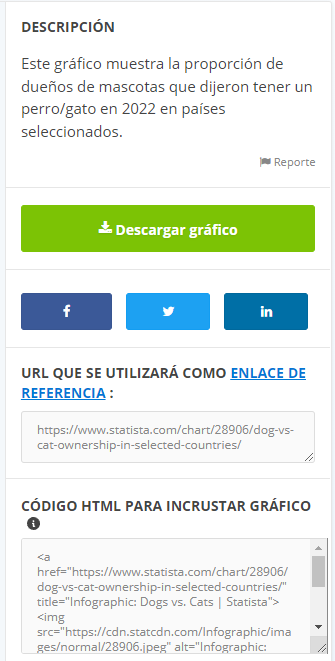

La plataforma Statista es uno de los portales de datos y estadísticas más reconocidos del mundo, utilizado por más de 4500 instituciones académicas. Gracias a un enfoque internacional, obtiene una visión global con estadísticas y pronósticos sobre 80 000 temas diferentes de más de 22 500 fuentes distintas. Por tanto, es un buen ejemplo de un uso intensivo del Big data.
El portal tiene una cuenta básica gratuita (si lo deseas te puedes registrar) y otras de pago más completas, pero podemos acceder a numerosas infografías sobre temas de actualidad sin tener ni tan siquiera que registrarnos.
Vamos a adentrarnos en en el Big Data explorando un poco esta página:
Enlace a statista.com
Tarea:
Debes realizar una presentación con la herramienta de presentaciones que uséis en clase sobre un tema de actualidad. Si quieres puedes usar la guía para elaboración de presentaciones del proyecro REA/DUA haciendo clic aquí.

En la web de statista.com, al hacer clic en cada uno de los gráficos del apartado de infografías, te llevará a un post donde se comenta y se amplía la información del gráfico. Normalmente está en inglés pero puedes utilizar algún traductor como el de Google.
Además te permite descargar la imagen así como copiar un enlace al post y un código para incrustar la imagen en algún otro medio de internet.
- Selecciona una de las infografías sobre algún tema de actualidad. En la parte inferior del post te sugiera otros gráficos relacionados con el tema.
- Realiza la presentación o resumiendo el contenido de los post y sacando conclusiones de dicha información y del gáfico.
- Al menos realiza tres diapositivas o pestañas con sus respectivos gráficos.
- Selecciona infografías diferentes a las de tus compañeros y compañeras.
- También puedes buscar información de otras páginas.
- Finalmente puedes enviar tu presentación al profesor o profesora a través del medio que estime más oportuno.
Un post es un artículo que se publica en el blog de una web y generalmente es mostrado cronológicamente junto al resto de artículos
 Existen muchas aplicaciones del análisis de grandes cantidades de datos y hay muchas empresas que ya están haciendo uso de los mismos.
Existen muchas aplicaciones del análisis de grandes cantidades de datos y hay muchas empresas que ya están haciendo uso de los mismos.